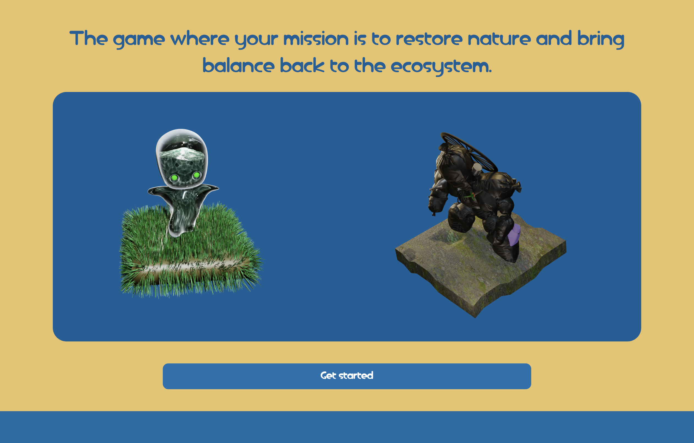
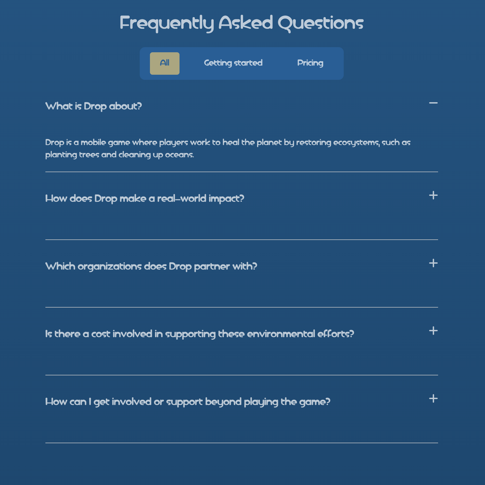
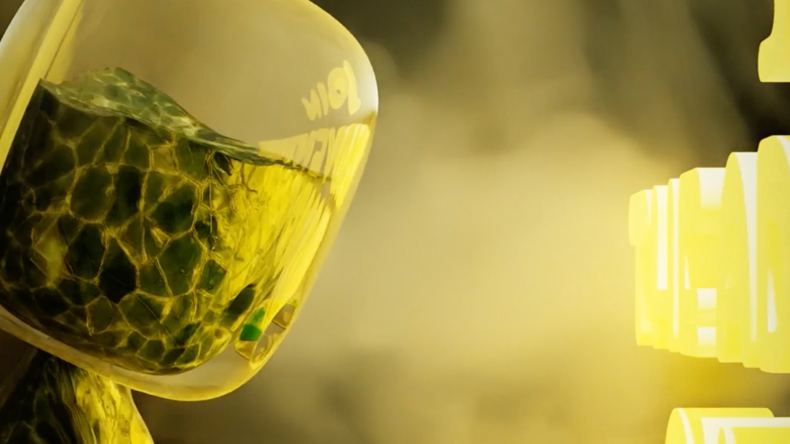
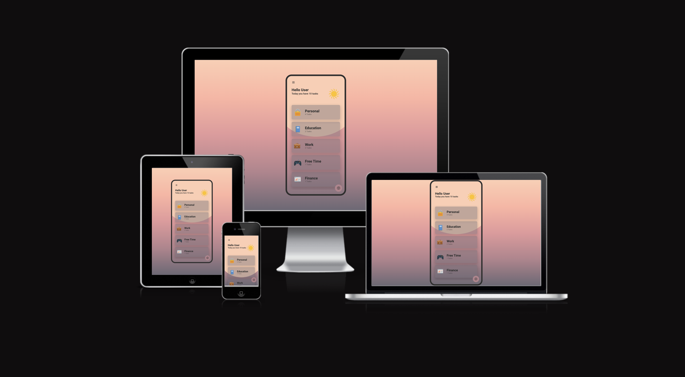
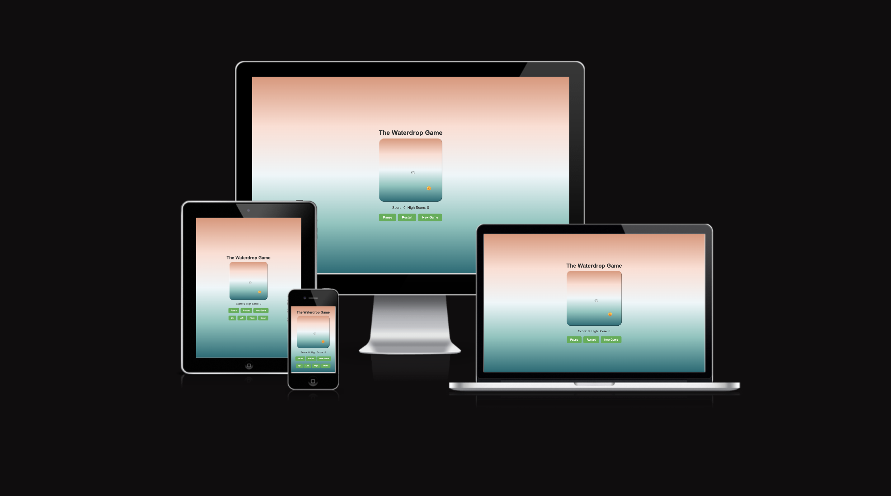

DROP WEBSITE PROJECT
OVERVIEW:
Drop is a mobile videogame where players are striving to heal the planet, one ecosystem at a time. The goal was to create a visual engaging site to attract and educate potential players about the game and its environmental impact.
MY ROLE:
(Team assignment)
As a frontend developer and 3D artist, I built responsive layouts and interactive elements to bring the game's visual to life.
TECHNOLOGIES:
Languages: HTML, CSS, javascript Tools: VSCode, Git/Github, Photoshop, Blender, Premiere Pro, Google chrome(dev tool)
KEY FEATURES:
Fully responsive across mobile, tablet and desktop using media queries. Character preview section featuring animations and engaging graphics.


ALFONSO ROTOLO
OVERVIEW:
The Alfonso Rotolo (italian winemaker) website completely redesigned to offer a more modern, seamless experiencefor users
MY ROLE:
(Solo project)
As a frontend developer and graphic designer, I focused on clean aesthetics
and intuitive navigation
TECHNOLOGIES:
Languages: HTML, CSS, javascript Tools: VSCode, Git/Github, Photoshop, Google chrome(dev tool)
KEY FEATURES:
Fully responsive across mobile, tablet and desktop using media queries.
Visually appealing design.



TO DO APP PROJECT
OVERVIEW:
Basic to-do list application created as an educational project to improve fundamental skills in JavaScript. This app allows user to add, mark, and remove tasks.
MY ROLE:
(Solo Project)
As both the developer and the designer, I implemented the app's core functionality using JavaScrispt and styled it with HTML and CSS to ensure simple user-friendly experience.
TECHNOLOGIES:
Languages: HTML, CSS, javascript Tools: VSCode, Git/Github, Photoshop, Google chrome(dev tool)
KEY FEATURES:
Functional task managment, users can add, delete and toogle the completion status of tasks. Educational focus on JavaScript, the app was built as a leraning tool for JS
syntax and structure.



SNAKE GAME PROJECT
OVERVIEW:
A classic snake game developed to practice interactive game development and to have a better understanding of JavaScript capabilities. In this version the game allows players to control a growing drop of water, eating ray of sun to increase its lenght and score.
MY ROLE:
(Solo project)
As the developer, I implemented game mechanics and optimize functionality for both desktop and mobile.
TECHNOLOGIES:
Languages: HTML, CSS, javascript Tools: VSCode, Git/Github, Photoshop, Google chrome(dev tool)
KEY FEATURES:
JavaScript-based game loop to control the snake's movement, detect collisions, and increase length upon eating food. It provides score tracking and reset functionality to restart the game without reloading the page.